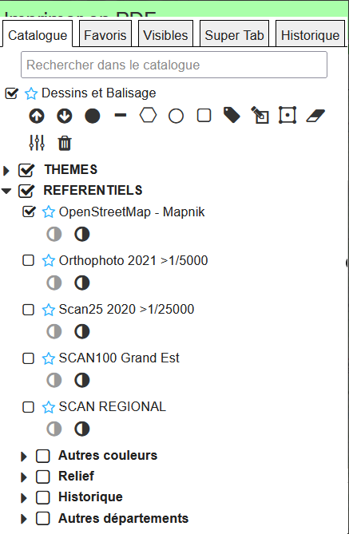
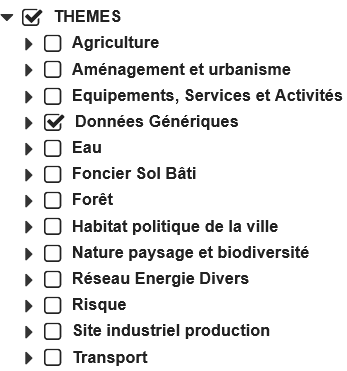
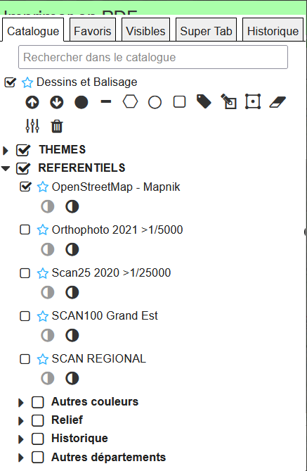
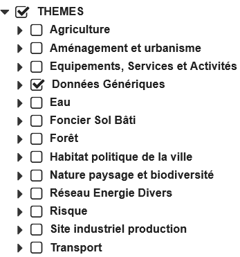
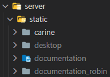
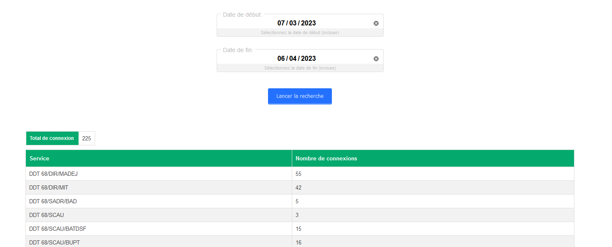

Présentation du deuxième stage

Déménagement problème test serveur
Présentation de Carine 3.0
 



Risque centrale Fessenheim
Zone innondable
Schéma de l'application
- Ajustements et amélioration de l'outil Carine 3.0
- "Nettoyer" le github + archivage
- Mise en place de la documentation
- Installation de Carine 3.0 sur le poste (problèmes) -
- Apprendre l'architecture de Carine 3.0 et comment l'application fonctionne -
- Formation GIT avec OpenClassroom -
- Mise en place du "nettoyage" et de l'archivage du github -
git tag archive/« nom de la branche » « nom de la branche »- Création d'une nouvelle route pour la documentation -
- Optimisation de lancement de Carine -
- Légère amélioration -
- Ajout d'une fonctionnalité sur la totalisation des connexions à l'application -
- Réalisation d'une expression régulière -